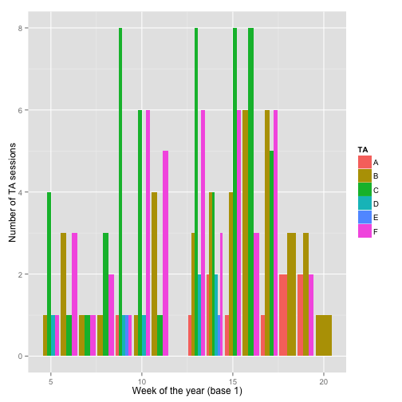
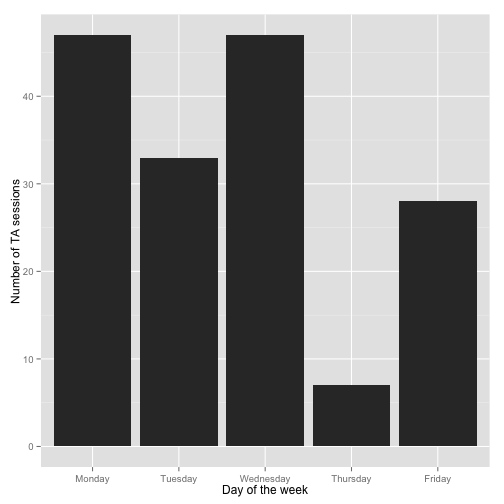

MPH TA sessions
View the Project on GitHub lcolladotor/mphtasessions
Intro
This is a quick report on the number of sessions (each 30 min long) with 2014 MPH capstone project TAs. Reservations are made using http://glimmer.rstudio.com/lcolladotor/MPHcapstoneTA/ and can be cancelled with up to 24hrs notice. They can only be made up to a week before the actual meeting day. Furthermore, a student can only have one active reservation at a time. That is, a reservation for any session on the following 7 days. Finally, each TA offers 8 slots per week for students to sign up and the TA schedule is available under the TA info tab on the site. It is also dynamically changed when a student selects a day of the week in the site thus allowing the student to choose among the TAs that have sessions on the day the student is free.
By day of the year
The following figure shows the number of TA sessions per TA per day of the year. Note that the term officially started on January 21st (week 4 of the year) but there were no TA sessions that week. There are a couple of outliers, but most TAs had 1 or 2 sessions per day (if any).

By TA and week number
Because each TA offers sessions during different weekdays, we can also look at the data per week of the year as shown below. For now the clear outlier is that TA C had a full week 9 with 8 slots used out of the 8 available. If you are a student, remember that there are plenty of other highly capable TAs available! It could also be that TA C chose the hours that are the most convenient for students. TA F has been quite busy as of late as well.

By day of the week
We can also explore the data to check which day of the week is has been the most busy so far. The next figure shows the number of TA sessions broken up by weekday. Wednesday is winning by a landslide so far. Although Mondays look pretty busy too.

By week
Finally, we can check if the overall number of TA sessions has changed as the term has progressed. Beyond the dip in week 7, the number of sessions seems quite stable per week until week 8. This might change in the upcoming weeks as the deadline for the capstone project gets closer as we can see on weeks 9 and 10. Week 11 might have been less busy because it was finals week and just before spring break. Week 13 (1st one for term 4) is just beginning and has broken all the records so far!

References
Web document generated using slidify (Vaidyanathan, 2012). Citations made with knitcitations (Boettiger, 2014).
- Carl Boettiger, (2014) knitcitations: Citations for knitr markdown files. http://CRAN.R-project.org/package=knitcitations
- Ramnath Vaidyanathan, (2012) slidify: Generate reproducible html5 slides from R markdown. http://ramnathv.github.com/slidify/
R code
## Load required libraries
library("ggplot2")
suppressMessages(library("dplyr"))
## Load and clean data
load("reservations.Rdata")
data <- reservations[complete.cases(reservations$TA),
]
data <- subset(data, Student != "Calendar fix" & !Description %in%
c("Therri will not hold office hours this day.",
"Leo will not hold office hours this day.",
"Meeting with department chair"))
## Anonymize TAs
data$TA <- factor(data$TA)
levels(data$TA) <- toupper(letters[1:6])
## Get the day of the actual TA sessions
data$dDay <- as.Date(data$desiredDate, format = "%d-%m-%Y")
## Summarise the data to get the number of sessions
## per day on a given day
sum <- summarise(group_by(data, dDay, TA), number = n())
## Calculate the week number (base 1). Used
## http://stackoverflow.com/questions/15278128/calculate-the-week-number-0-53-in-year-with-r
sum$weeknum <- as.numeric(format(sum$dDay + 6, "%U"))
## Plot by day of the year
ggplot(sum, aes(x = dDay, y = number, fill = TA)) +
geom_bar(stat = "identity", position = "dodge") +
xlab("Day of the year") + ylab("Number of TA sessions")
## Plot by week of the year
sum <- regroup(sum, list(quote(weeknum)))
tabyweek <- summarise(group_by(sum, weeknum, TA), number = sum(number))
ggplot(tabyweek, aes(x = weeknum, y = number, fill = TA)) +
geom_bar(stat = "identity", position = "dodge") +
xlab("Week of the year (base 1)") + ylab("Number of TA sessions")
## Plot by weekday
sum$weekday <- weekdays(sum$dDay)
tmp <- regroup(sum, list(quote(weekday)))
byweekday <- summarise(tmp, number = sum(number))
byweekday$weekday <- factor(byweekday$weekday, levels = c("Monday",
"Tuesday", "Wednesday", "Thursday", "Friday"))
ggplot(byweekday, aes(x = weekday, y = number)) + geom_bar(stat = "identity") +
xlab("Day of the week") + ylab("Number of TA sessions")
## Plot by week of the year ignoring TA
byweek <- summarise(sum, number = sum(number))
ggplot(byweek, aes(x = weeknum, y = number)) + geom_point() +
geom_line() + xlab("Week of the year (base 1)") +
ylab("Number of TA sessions") + scale_y_continuous(breaks = seq(0,
15, by = 1), limits = c(0, 15))
Reproducibility
This report was last updated on
## [1] "2014-03-24 11:41:59 EDT"
R session information:
## R version 3.0.2 (2013-09-25)
## Platform: x86_64-apple-darwin10.8.0 (64-bit)
##
## locale:
## [1] en_US.UTF-8/en_US.UTF-8/en_US.UTF-8/C/en_US.UTF-8/en_US.UTF-8
##
## attached base packages:
## [1] stats graphics grDevices utils datasets methods base
##
## other attached packages:
## [1] dplyr_0.1.1 ggplot2_0.9.3.1 knitcitations_0.5-0
## [4] bibtex_0.3-6 knitr_1.5 slidify_0.4
## [7] sendmailR_1.1-2 base64enc_0.1-1 shiny_0.9.1
##
## loaded via a namespace (and not attached):
## [1] assertthat_0.1 bitops_1.0-6 caTools_1.16
## [4] codetools_0.2-8 colorspace_1.2-4 dichromat_2.0-0
## [7] digest_0.6.4 evaluate_0.5.1 formatR_0.10
## [10] grid_3.0.2 gtable_0.1.2 httpuv_1.2.2
## [13] httr_0.2 labeling_0.2 markdown_0.6.4
## [16] MASS_7.3-29 munsell_0.4.2 plyr_1.8
## [19] proto_0.3-10 RColorBrewer_1.0-5 Rcpp_0.11.0
## [22] RCurl_1.95-4.1 reshape2_1.2.2 RJSONIO_1.0-3
## [25] scales_0.2.3 stringr_0.6.2 tools_3.0.2
## [28] whisker_0.3-2 XML_3.95-0.2 xtable_1.7-1
## [31] yaml_2.1.10
Generate report:
library("slidify")
slidify("index.Rmd")